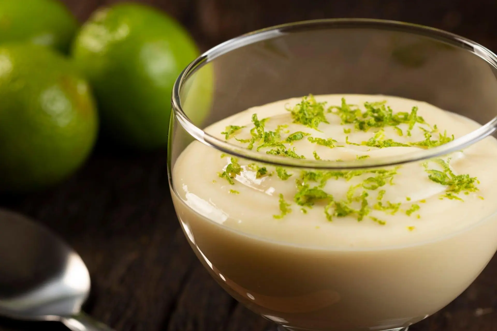

Doces
Salgados
Saladas

Mousse de Limão
Ingredientes
1 lata de creme de leite sem soro
1 lata de leite condensado
160 ml de suco de limão
Raspas de 2 limões para decorar
Modo de Preparo
No liquidificador, coloque 1 lata de creme de leite sem soro, 1 lata de leite condensado e 160 mililitros de suco de limão. Bata até ficar homogêneo.
Transfira a misture para taças e decore com raspas de limão. É importante não ralar a parte branca para não amargar.
Leve para gelar por, pelo menos, 1 hora antes de servir.